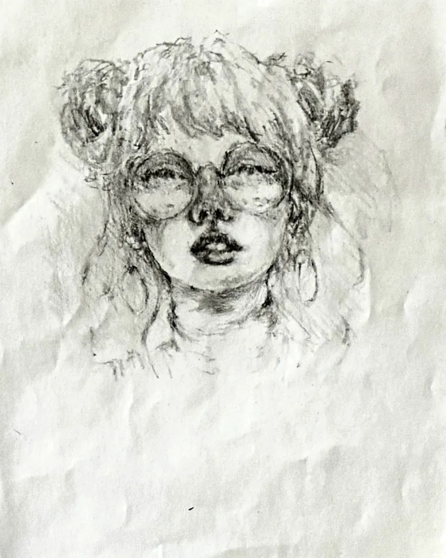

制作背景
ケント紙の滑らかな表面に、鉛筆の粒子を一層ずつ重ねていく。消しては描き、描いては消す——その繰り返しの中で、最初のイメージとは少し違う場所に絵が着地します。
この作品では、タイトルに込めた感覚——「Style is her armor in a world that's fading to black.」——を画面の中でどう表現するかを模索しました。言葉にできない感情を、線と色に託しています。
プロセス
Hi-uni の B〜4B を中心に、明暗のコントラストを意識しながら調子を重ねました。練り消しでハイライトを拾い、光の方向を整えていきます。

振り返り
完成後に改めて眺めると、制作中には気づかなかった表情が浮かび上がってきます。意図と偶然のあいだに生まれるものを、次の作品へのヒントとして受け取っています。